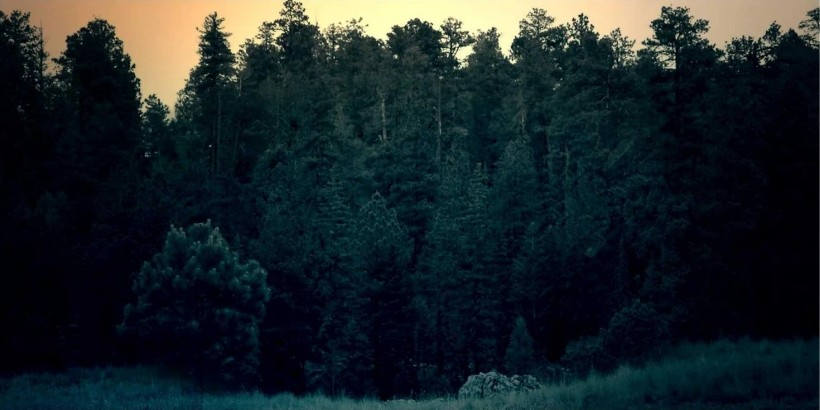

Absurd & Philosophy Essay
Camus

I woke up half an hour ago, and I lay in my bed contemplating whether to make a cup of coffee or kill myself. The latter would have asked for a lot of effort, as the human body has evolved to survive a lot, A LOT!
If I hadn't been this aware of how many eons it took for the human body to become this rigid, it would have been an easy choice. But I decided to go for the coffee instead, and as the first sip of warm black liquid hit my throat, then my stomach, warming everything along the way, very pleasantly, I knew I had made the right choice.
I accidentally spilled some of the coffee on my bedsheet and ignored it like it didn't matter. I thought it had no significance. The sheet would be washed, and then there would be no evidence of coffee ever contacting it. And then, I pondered the meaning of it all. If my killing myself has any meaning to it whatsoever, so do those little coffee stains on my bedsheets.
Either everything makes sense, or nothing ever does.
Who decides?